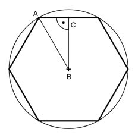

Aufgabe 237 Ein Werkzeugmacher soll aus einem Kegel mit einem Radius von 10 cm, einer Höhe von 25 cm und einer Dichte von 8,4 g/cm³ die größtmögliche regelmäßige sechseckige Pyramide herstellen. Wie groß ist der Abfall A in kg?  In einem regelmäßigen Sechseck sind die Seiten gleich lang wie der Radius. Satz von Pythagoras im Dreieck ABC: AB = r = 10 cm BC = h AC = r/2 = 10 cm/2 = 5 cm r² = h² + (r/2)² | -(r/2)² h² = r² - (r/2)² h² = 10² cm² - 5² cm² h² = 75 cm² |√ h = 8,66 cm Sechseckgrundfläche G: 10 cm * 8,66 cm G = 6 * ------------------- = 259,8 cm² 2 л * r² * hKegel л * 10² cm² * 25 cm VKegel = ------------------- = ---------------------- = 2 616,7 cm³ 3 3 G * hKegel 259,8 cm² * 25 cm VPyramide = ------------ = --------------------- = 2 165 cm³ 3 3 ΔV = VKegel - VPyramide = 2 616,7 cm³ - 2 165 cm³ = 451,7 cm³ m = V * ρ = 451,7 cm³ * 8,4 g/cm³ = 3 794 g = 3,79 kg